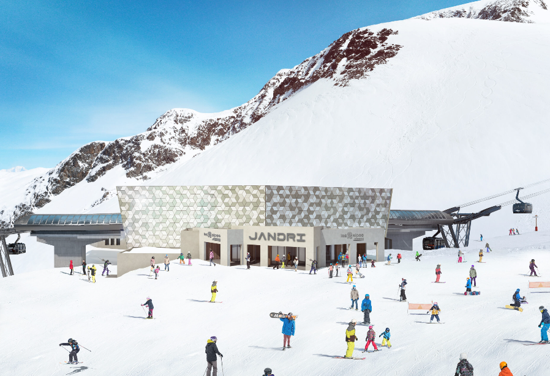
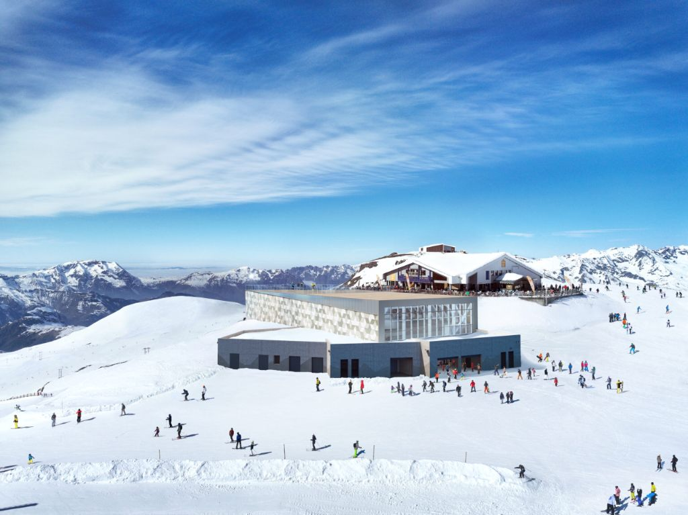

Étanchéité haute altitude pour résidences premium en station

Jandri 1 (1650m) - © Pyrene DUFFAU / Les Deux Alpes

Jandri 3 (2600m)

Jandri 4 (3200m)
Promoteur : SATA Group
Architecte : ATEAM Architectes
Type : Résidences premium en station
Programmes : Jandri 1, Jandri 3 et Jandri 4
Statut : Livré en 2025
Station : Les Deux Alpes (38)
Altitude : 1650m à 3200m
Département : Isère
Accès : Téléphérique Jandri Express
✓ Étanchéité complète toitures-terrasses adaptée aux contraintes d'altitude
✓ Membrane haute performance résistante aux cycles gel-dégel extrêmes
✓ Systèmes d'évacuation des eaux pluviales renforcés pour forte pluviométrie montagne
✓ Isolation thermique renforcée pour conditions climatiques extrêmes
✓ Surface traitée : Plusieurs milliers de m² sur les 3 programmes
Le téléphérique Jandri Express vous emmène à 3200 mètres d'altitude en seulement 17 minutes depuis le centre de la station.
Composé de deux tronçons : 2600m puis 3200m
À 3200m : restaurant panoramique avec vue imprenable pour une pause gourmande en altitude
Jandri 1 : Crédit photo © Pyrene DUFFAU / Les Deux Alpes
Architecte : ATEAM Architectes
GFE maîtrise les contraintes d'altitude et climatiques extrêmes. Confiez-nous votre projet en montagne.
Demander un Devis Gratuit